このページは、Shogoが作成した海運業界のメモを素材に、事実を照合して再構成したものです。略語の正式名称は末尾の用語集に記載しています。
スマートフォンでは、図を横にスクロールすると全体を表示できます。
海運は、船で貨物を運ぶ事業です。運ぶ貨物の形によって船の種類が異なり、運賃の決まり方と主要な企業も異なります。ニュースで「海運大手」と呼ばれる企業の多くはコンテナ船の会社ですが、日本の大手3社はばら積み船・タンカー・LNG船も多く運航しています。
| 船の種類 | 運ぶ貨物 | 運び方 | 運賃の指標 | 主な企業 |
|---|---|---|---|---|
| コンテナ船 | 家電・衣料・部品など工業製品 | 規格を統一した箱に詰め、決まった航路を時刻表どおりに運航する（定期船） | 上海輸出コンテナ運賃指数（SCFI）、Drewryの世界コンテナ指数（WCI） | MSC・マースク・CMA CGM・COSCO |
| タンカー | 原油・石油製品・化学品 | 液体を船倉のタンクに直接積む。荷主の求めに応じて航路を決める（不定期船） | ワールドスケール（WS） | フロントライン・日本の大手3社など |
| ばら積み船 | 鉄鉱石・石炭・穀物 | 包装せずに船倉へ積む。不定期船 | バルチック海運指数（BDI） | 日本の大手3社・ギリシャの船主など |
| LNG船 | 液化天然ガス | マイナス約162℃で液体にしたガスを断熱タンクで運ぶ。長期契約が中心 | 長期契約の傭船料 | 商船三井・日本郵船・川崎汽船など |
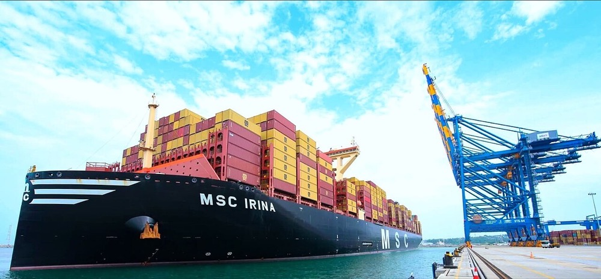
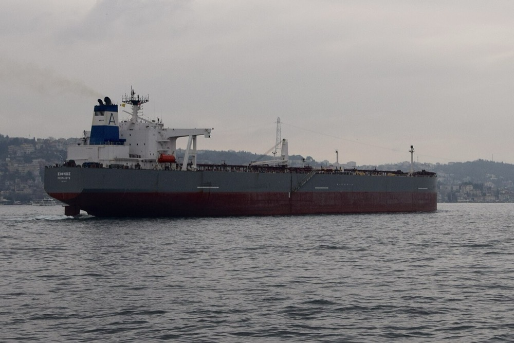
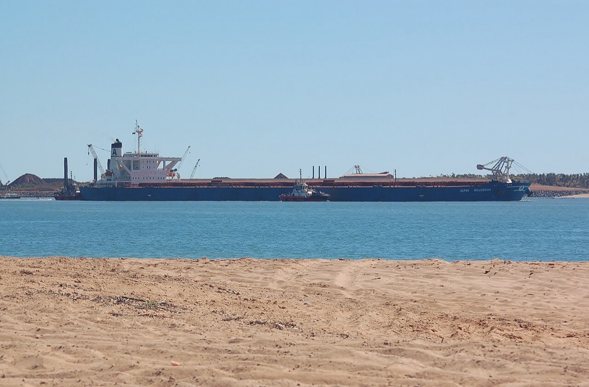
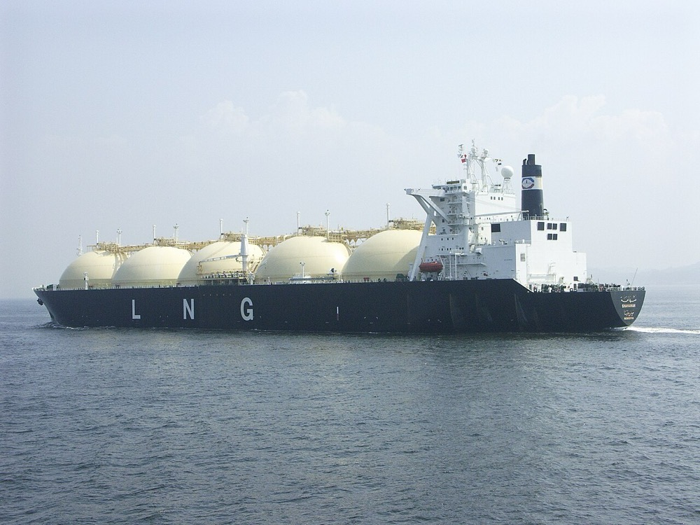
TEU（Twenty-foot Equivalent Unit）は、長さ20フィート（約6.1m）のコンテナ1個を1とする単位です。現在の主流である40フィートのコンテナは2TEUと数えます。船の積載能力も、企業の規模もTEUで表します。「MSCの船腹量は約730万TEU」は、MSCが運航する全船を合計すると20フィートのコンテナを約730万個積めることを示します。
コンテナの寸法はISO規格（ISO 668）に基づきます。素材のメモで紹介されていたONEの「コンテナ図鑑」とHZ Containersの記事では、冷凍用や液体用などコンテナの種類と色の意味を確認できます（出典欄に記載）。
16世紀から19世紀前半までの海運の主役は、国家と国策会社でした。19世紀後半からは郵便輸送を政府から請け負った汽船会社が、1956年以降はコンテナ船の会社が主役になりました。下の年表は、本文で扱う出来事の位置を示します。
1900年を境に横軸の縮尺を変えています。各時代の出来事の詳細は、以下の表に記載しています。
| 年 | 出来事 |
|---|---|
| 1453年 | オスマン帝国がコンスタンティノープルを征服しました。東地中海の交易路がオスマン帝国の支配下に入り、ヨーロッパ諸国がアジアへの別の航路を求める背景の一つになったとされます。ジェノヴァとヴェネツィアはその後も交易を続けており、両国の衰退は大西洋航路と喜望峰航路の開拓など複数の要因によるとされます。 |
| 1492年 | コロンブスがスペインの支援でカリブ海の島に到達しました。 |
| 1498年 | ポルトガルのヴァスコ・ダ・ガマが喜望峰を回ってインドのカリカットに到達しました。 |
| 16〜18世紀 | 海上交易の主導権は、ポルトガルとスペインからオランダへ、さらにイギリスへと移りました。 |
| 1600年 | イギリス東インド会社が国王の勅許を得て設立されました。 |
| 1813年・1833年 | 1813年の特許状法でインド貿易の独占が廃止され、1833年の特許状法で中国貿易と茶の独占も廃止されました。1833年以降、東インド会社は商業活動を終え、インドの統治機関になりました。アダム・スミスは1776年の『国富論』で、東インド会社の独占を批判しています。 |
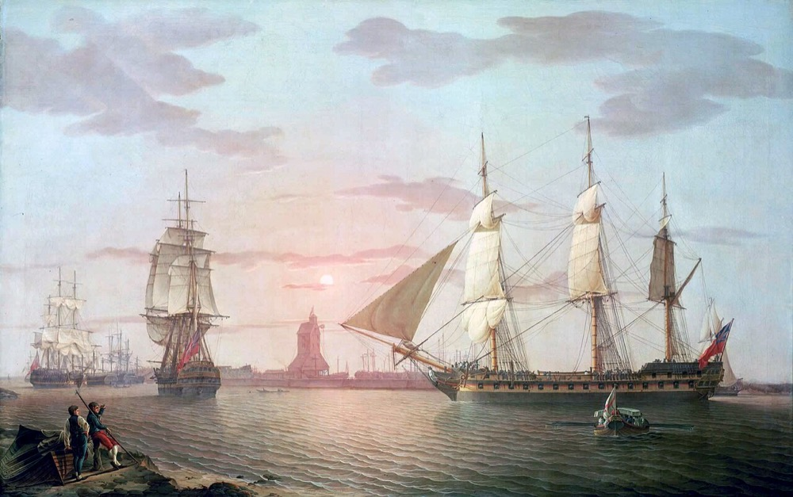
19世紀には蒸気船が普及し、政府から郵便輸送を請け負う汽船会社が各国で設立されました。郵便の補助金で定期航路を維持する仕組みは、日本の三菱と日本郵船にも共通します。
| 年 | 出来事 |
|---|---|
| 1834年 | ロイズ・レジスター（船の登録と検査の機関。1760年設立）が、競合していた2つの船名録を統合し「Lloyd's Register of British and Foreign Shipping」として再編されました。 |
| 1840年 | 1837年に設立されたPeninsular Steam Navigation Companyが勅許を得て、P&O（Peninsular and Oriental Steam Navigation Company）になりました。 |
| 1847年 | ハンブルクでハンブルク・アメリカ汽船会社（HAPAG）が設立されました。現在のハパックロイドの前身です。 |
| 1848年 | アメリカでパシフィック・メール汽船会社が設立されました。 |
| 1851年 | フランスでメサジュリ・マリティーム（当初の名称はメサジュリ・ナショナル）が設立されました。現在のCMA CGMの前身の一つです。 |
| 1869年 | スエズ運河が開通しました。 |
| 1870年 | 岩崎弥太郎が九十九商会を設立しました。のちの三菱商会・三菱汽船会社です。 |
| 1875年 | イギリス政府が、エジプト総督が保有していたスエズ運河会社の株式（約17.7万株、全体の半分弱）を400万ポンドで買い取りました。資金はロスチャイルド家が立て替えました。運河会社の筆頭株主はフランス側に残りました。同年に郵便汽船三菱会社が発足しました。 |
| 1875〜1876年 | 三菱が政府の支援を受けて横浜と上海を結ぶ航路を開き、パシフィック・メールの支線を買い取りました。P&Oが開設した中国と日本を結ぶ支線も、三菱との競争に敗れて撤退しました。 |
| 1884年 | 大阪商船が設立されました。のちの商船三井の前身です。 |
| 1885年 | 郵便汽船三菱会社と共同運輸会社が合併し、日本郵船が発足しました。 |
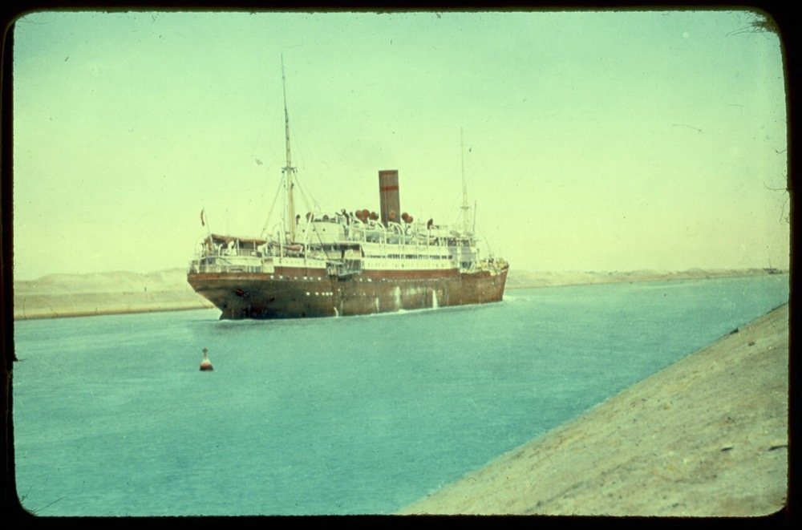
| 年 | 出来事 |
|---|---|
| 1904年 | デンマークのスベンボーで、ペーター・マースク・モラーと息子のA.P.モラーが汽船会社を設立しました。マースクの起源です。A.P.モラーは1912年に別の汽船会社も設立しています。 |
| 1914年 | パナマ運河が開通しました。ニューヨークからサンフランシスコまでの航路は、南米南端を回る約1万3,000海里から約5,200海里になり、約6割短くなりました。 |
| 1914〜1918年 | デンマークは第一次世界大戦で中立を保ち、マースクは戦時の海運需要でデンマーク有数の海運会社になりました。敗戦国のドイツは、ヴェルサイユ条約で1,600総トン以上の商船をすべて連合国に引き渡しました。 |
| 1956〜1957年 | エジプトがスエズ運河を国有化し、英仏とイスラエルが出兵しました（第2次中東戦争）。運河は沈没船で塞がれ、1957年まで通航できませんでした。世界の海運市況は1956年11月から急騰し、翌1957年1月から急落しました。日本では、この上昇と下落を「スエズ・ブーム」と呼びます。 |
| 1964年 | 海運再建二法（1963年）に基づき、日本の外航海運会社が日本郵船・大阪商船三井船舶・川崎汽船・ジャパンライン・山下新日本汽船・昭和海運の6グループに集約されました。1950年代からの過当競争で各社の財務が悪化していたことが背景です。スエズ・ブームとその反動から集約に至る直接の因果関係を示す資料は確認できませんでした。 |
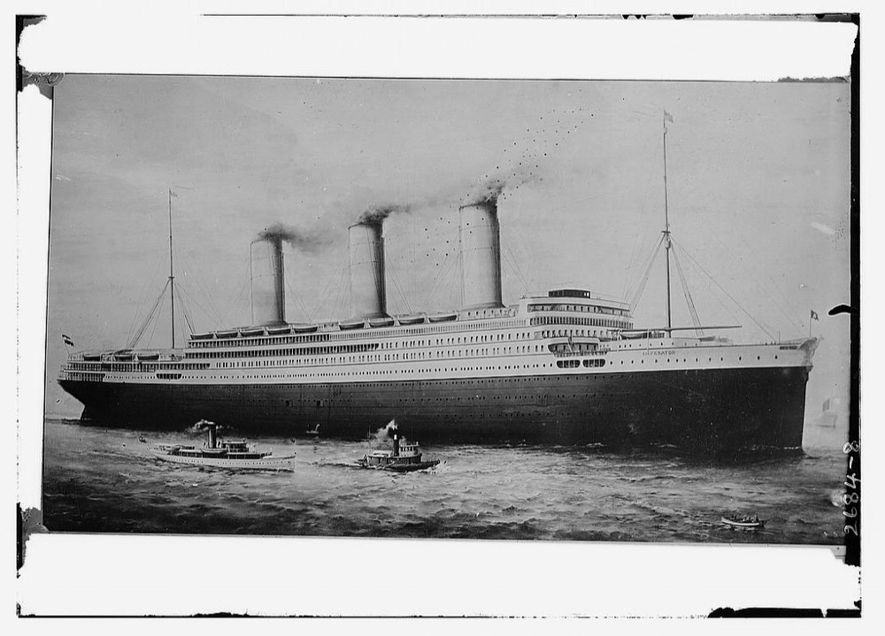
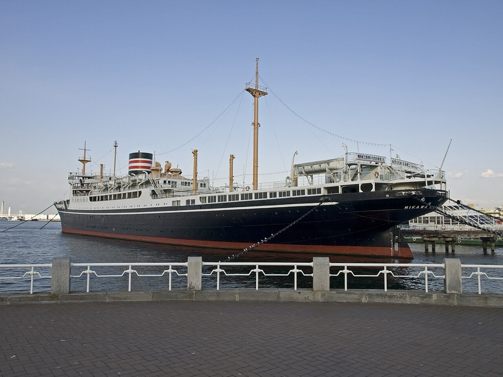
1956年4月、トラック運送業者のマルコム・マクリーンはアイデアルX号に58個のコンテナを積み、ニュージャージー州のポート・ニューアークからテキサス州ヒューストンまで運びました。アイデアルX号は、第二次世界大戦中に建造されたタンカーを改造した船です。運航したのはマクリーンのパン・アトランティック汽船で、マクリーンは1960年に会社名をシーランドとしました。
コンテナ化以前は、袋や木箱を人手で1つずつ積み降ろしていました。コンテナは岸壁のクレーンでそのまま船からトラックや鉄道に移せるため、港での荷役の時間と人手を大きく減らしました。運ぶ単位がTEUに統一されたことで、船を大きくするほど1TEUあたりの費用が下がるようになり、企業間の規模の競争が始まりました。
アイデアルX号とマクリーンの写真で、利用条件が明示され、長辺が600px以上のものは見つかりませんでした。Wikimedia CommonsにはアイデアルX号の線画とマクリーンの小さな写真（516px）があります。
| 年 | コンテナ化と大型化の経過 |
|---|---|
| 1956年 | アイデアルX号が58個のコンテナを運びました。 |
| 1966年 | シーランドが大西洋航路でコンテナ船の運航を始めました。 |
| 1968年 | 台湾で張栄発がエバーグリーン（長栄海運）を設立しました。 |
| 1970年 | ジャンルイジ・アポンテがMSCを設立しました（設立地はブリュッセルとする資料とナポリとする資料があります）。1978年に本社をスイスのジュネーブに置きました。同じ1970年、ドイツではHAPAGと北ドイツ・ロイドが合併し、ハパックロイドが発足しました。 |
| 1999年 | マースクがシーランドの国際コンテナ部門を8億ドルで買収し、マースク・シーランドになりました。統合後の船隊は250隻超・約60万TEUで、2位以下との差を広げました。 |
| 2013年 | マースクがトリプルE級（約1万8,000TEU）の1番船を就航させました。 |
| 2016年 | パナマ運河の拡張工事が完了し、新しい閘門で大型のネオパナマックス船が通航できるようになりました。 |
| 2023年〜 | MSCイリーナなど、積載能力2万4,000TEU級の船が就航しています。 |
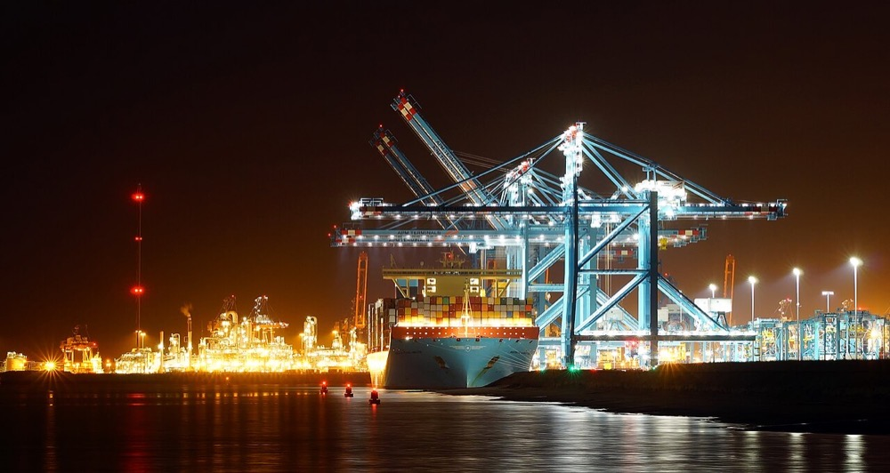
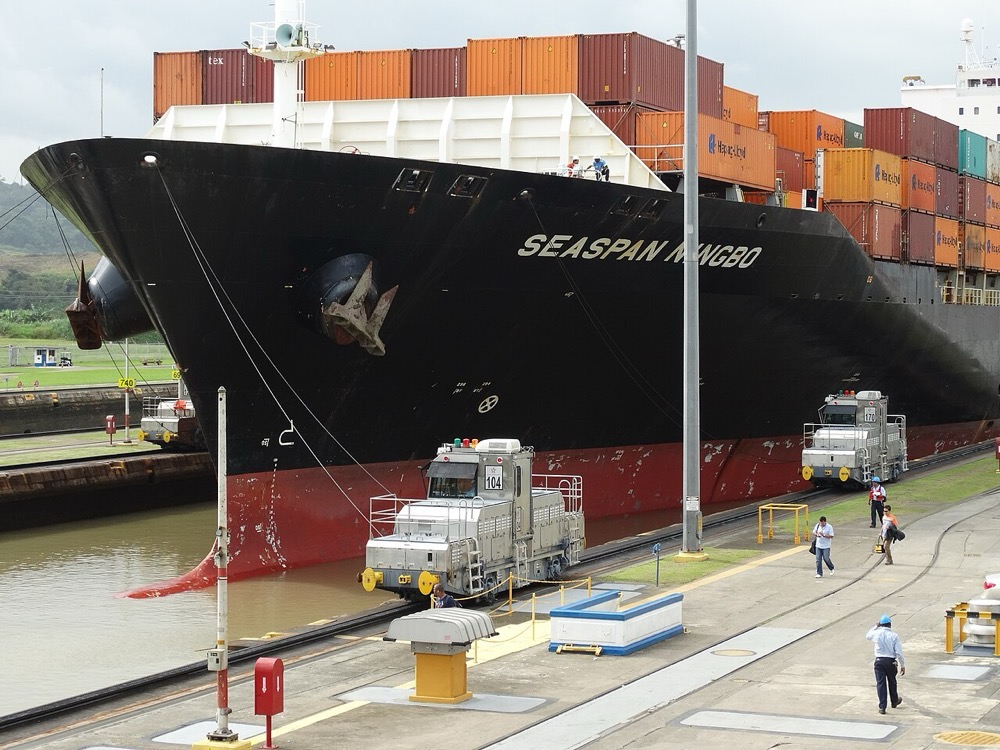
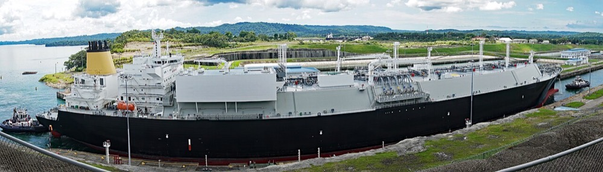
アライアンスは、複数の船社が船のスペースを交換し、航路を共同で運航する協定です。合併とは異なり、運賃と営業は各社が別々に行います。アジア〜欧州や太平洋の航路で毎週の定期便を維持するには、1つの航路に10隻前後の船が必要です。1社では便数を揃えられない航路も、数社で船を出し合えば毎週の運航を維持できます。下の図は、主要な船社がどのアライアンスに所属していたかを年ごとに示します。
COSCO・川崎汽船・陽明海運の協力は1990年代後半から続いていましたが、開始年は資料で確認できなかったため、1997年より前を点線で示しています。韓進海運の加入は2001年とする資料と2003年とする資料があります。HMMは2017〜2020年にザ・アライアンスではなく2Mと戦略的協力を結んでいました。
| アライアンス | 期間 | 構成 | 経過 |
|---|---|---|---|
| ザ・グローバル・アライアンス | 1994〜1998年 | APL・商船三井・OOCL・ネドロイド・MISC | APLとOOCLの1991年からの提携に、1994年9月に商船三井とMISCが加わりました。ネドロイドはアジア〜北米東岸の協定で参加しました。1996年に全面実施となり、ネドロイドがP&Oと統合したため離脱しました。 |
| グランド・アライアンス | 1990年代半ば〜2012年 | 日本郵船・ハパックロイド・P&O（のちP&Oネドロイド）・NOL→OOCL・MISC | 1996年の時点でP&O・ハパックロイド・NOL・日本郵船の提携が報じられています。NOLは1997年にAPLを買収してニュー・ワールド・アライアンスに移り、1998年からはOOCLとMISCを加えた体制になりました。P&Oネドロイドは2005年のマースクによる買収で離脱し、MISCは2010年に離脱しました。 |
| ザ・ニュー・ワールド・アライアンス | 1998〜2012年 | APL（NOL）・商船三井・HMM | 2012年にグランド・アライアンスと統合してG6になりました。 |
| CKY・CKYH・CKYHE | 1990年代後半〜2017年 | COSCO・川崎汽船・陽明海運→韓進海運→エバーグリーン | 韓進海運の加入でCKYH、2014年のエバーグリーンの加入でCKYHEになりました。韓進海運は2016年8月に経営破綻しました。 |
| G6アライアンス | 2012〜2017年 | ハパックロイド・日本郵船・OOCL・APL・商船三井・HMM | 2017年4月の再編で解消しました。 |
| 2M | 2015年1月〜2025年1月 | マースク・MSC | 最低10年、解約予告2年の契約でした。2023年1月に両社が終了を発表しました。MSCが中古船の購入で船隊を拡大した一方、マースクは船隊を据え置いて陸上物流を含む一貫輸送に力を入れ、両社の方針が離れたためです。 |
| オーシャン・アライアンス | 2017年4月〜 | CMA CGM・COSCO・エバーグリーン・OOCL | 素材のメモに記載のなかったアライアンスです。2024年2月に2032年3月までの延長で合意しています。前身は2015年からのオーシャン・スリー（CMA CGM・UASC・中国海運）です。 |
| ザ・アライアンス | 2017年4月〜2025年1月 | ハパックロイド・日本郵船・商船三井・川崎汽船・陽明海運→ONE・HMM | 日本の3社は2018年4月からONEとして参加しました。HMMは2020年に加入しました。ハパックロイドがジェミニに移るため、2025年1月で終了しました。 |
| ジェミニ・コーポレーション | 2025年2月〜 | マースク・ハパックロイド | 2024年1月に発表しました。発表時は約290隻・340万TEU、始動時は約340隻と報じられています。主要港に寄港を絞り、支線で周辺の港を結ぶハブ・アンド・スポーク方式で、定時運航率90%超を目標にしています。Sea-Intelligenceの調査では、2025年3〜4月に90.7%を記録しました。 |
| プレミア・アライアンス | 2025年2月〜 | ONE・HMM・陽明海運 | ザ・アライアンスの残る3社で構成します。MSCは構成員ではなく、アジア〜北欧州とアジア〜地中海の航路でプレミア・アライアンスと船のスペースを交換しています。 |
| MSCの単独運航 | 2025年2月〜 | MSC | 東西の基幹航路を自社の船で運航します。船腹量は2026年4月時点で約732万TEU・約1,000隻です。 |
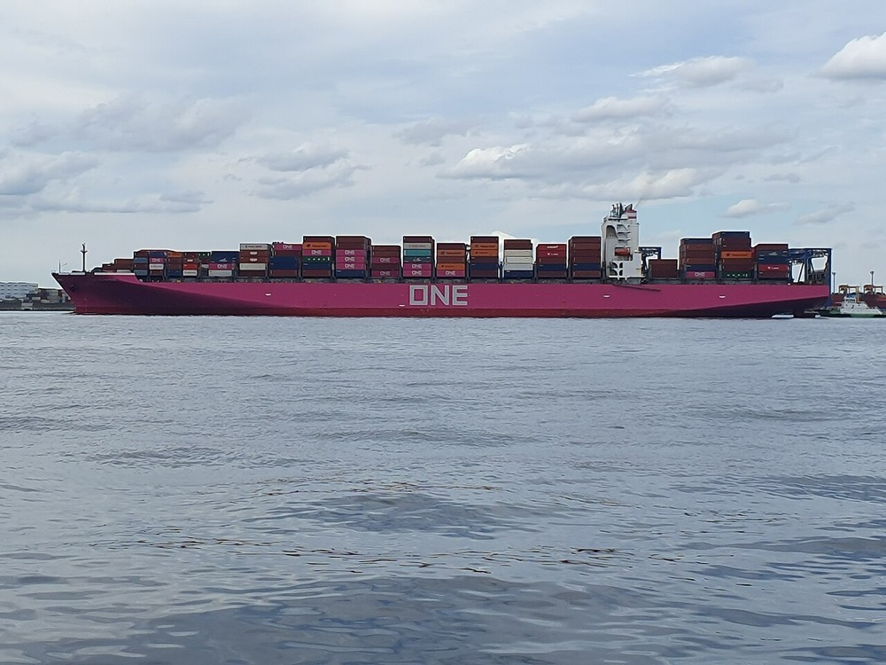
アライアンスが航路の共同運航であるのに対し、合併と買収は企業そのものを統合します。1990年代後半から、欧州と中国の大手が同業を買収して規模を拡大しました。日本の3社は、合併ではなくコンテナ船事業だけを切り出して統合しました。
| 年 | 買い手 | 対象 | 金額・内容 |
|---|---|---|---|
| 1996年 | CMA（1978年にジャック・サーデが設立） | CGM（フランス政府が民営化） | CMA CGMが発足しました。CGMは1970年代にフランス大西洋汽船とメサジュリ・マリティームを統合して発足した国営会社です。 |
| 1997年 | NOL（シンガポール） | APL（米国） | 約8.25億ドル |
| 1998・1999年 | 日本郵船／大阪商船三井船舶 | 昭和海運／ナビックスライン | 1998年10月に日本郵船が昭和海運と合併しました。1999年4月に大阪商船三井船舶がナビックスラインと合併し、商船三井になりました。大阪商船三井船舶は1964年に大阪商船と三井船舶が合併した会社です。 |
| 1999年 | マースク | シーランドの国際部門 | 8億ドル |
| 2005年 | マースク | P&Oネドロイド | 約23億ユーロ（約30億ドル） |
| 2005年 | CMA CGM | デルマス（ボロレ・グループから） | 6億ユーロ。完了は2006年1月 |
| 2016年 | CMA CGM | NOL（APL） | 約24億ドル |
| 2017年 | ハパックロイド | UASC（湾岸6か国の船社） | 現金ではなく株式交換による合併です。UASCの株主はハパックロイド株の約28%を取得し、カタールが約14.4%・サウジアラビアの公共投資基金が約10.1%を保有しました。 |
| 2017・2018年 | 日本郵船・商船三井・川崎汽船 | 3社のコンテナ船事業 | 2017年7月にONEを設立し、2018年4月に営業を開始しました。出資比率は日本郵船38%・商船三井31%・川崎汽船31%です。 |
| 2018年 | COSCO | OOCL（香港） | 約63億ドル |
| 2019年 | CMA CGM | CEVAロジスティクス | 株式公開買付けで約98%を取得しました。 |
| 2022年 | MSC | ボロレ・アフリカ・ロジスティクス | 企業価値57億ユーロ。アフリカの港湾と物流の事業です。 |
| 2022〜2023年 | ハパックロイド | SM SAAMの港湾・物流事業（チリ） | 約10億ドル。6か国の10ターミナルを含みます。 |
| 2026年 | ハパックロイド | ZIM（イスラエル） | 総額約42億ドルで合意したと報じられています。イスラエル国内の事業はイスラエルの投資ファンドFIMIが引き受けます。イスラエル政府の黄金株の審査が続いており、完了は確認できていません。 |
ハパックロイドとZIMの案件は、2026年11月時点で承認の状況を確認できた報道がありません。今後の報道で確認が必要です。
コンテナ船の運賃は、景気・燃料価格・紛争で大きく変動します。マースクの2022年の売上高は815億ドル、営業利益（EBIT）は309億ドルで過去最高でしたが、翌2023年の見通しは基礎的なEBITで20〜50億ドルでした。各社は、運賃に連動しない港湾・陸上物流・航空貨物の事業を買収で拡大しています。
| 企業 | 多角化の内容 |
|---|---|
| マースク | 港湾運営（APMターミナルズ）・倉庫・陸上輸送・航空貨物を組み合わせ、荷主の物流を一括で受託する体制に移行しています。 |
| MSC | 1988年に客船事業に参入し、1995年にMSCクルーズに改称しました。港湾運営（TiL）、アフリカの物流（2022年にボロレから買収）、航空貨物にも進出しています。 |
| CMA CGM | 2019年にCEVAロジスティクスを買収し、海上・航空・陸上の輸送を1つのグループで扱っています。 |
| ハパックロイド | 2023年にSM SAAMの港湾事業を買収し、ターミナル事業を拡大しました。素材のメモにあった「2023年にドイツの航空会社を買収」は、確認できませんでした。 |
| 日本の大手3社 | 商船三井は2022年にTOBでダイビル（約1,213億円）を完全子会社にし、不動産事業を拡大しました。日本郵船は2025年4月、ENEOSオーシャンの原油タンカー以外の海運事業（LPG船・ケミカルタンカーなど）を承継した新会社の株式80%を取得しました。3社ともLNG船と脱炭素の燃料の輸送に投資しています。 |
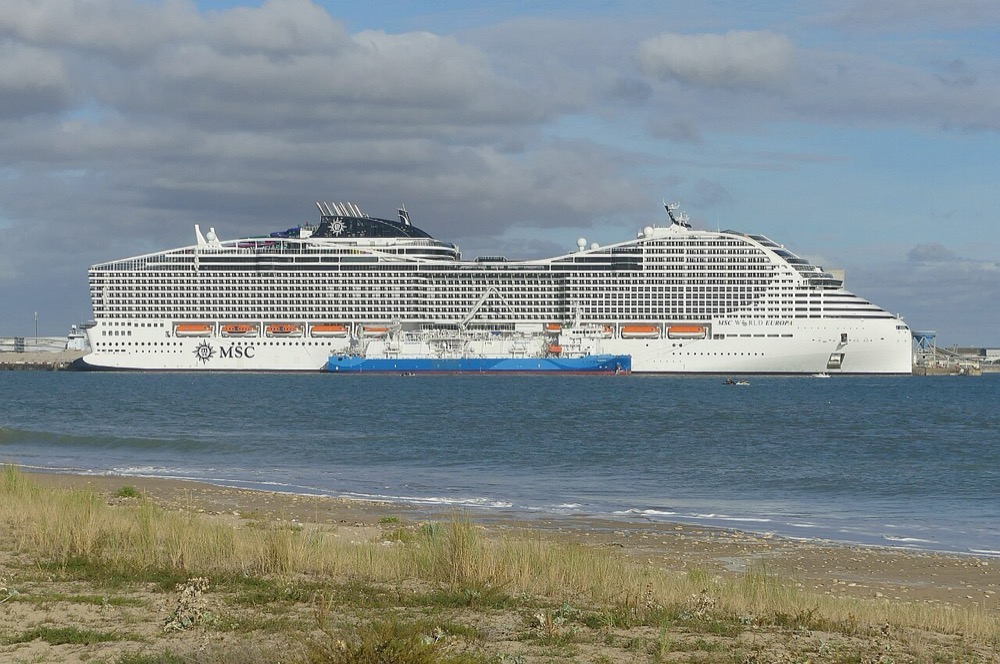
MSCの本社があるスイスは海に面していませんが、バーゼルのライン川の港から、ドイツとオランダを経てロッテルダムまで船で貨物を運べます。アントワープとはライン川からの運河で結ばれています。ハンブルクはエルベ川の河口の港で、ライン川の水系ではありません。スイスに大手船社と商社の本社が集まる理由としては、政治的な中立・法人税の水準・金融機関の集積が挙げられます。
デンマークは北海とバルト海を結ぶ海峡に面し、19世紀から海運業が盛んでした。マースクは第一次世界大戦中、中立国の船として運航を続けました。ただし、地理的な条件だけで特定の企業の成長を説明できる資料は確認できませんでした。素材のメモにあった「小国でも海運を通じた世界支配力を確立できる」という記述は、評価を含むため本文では扱いません。
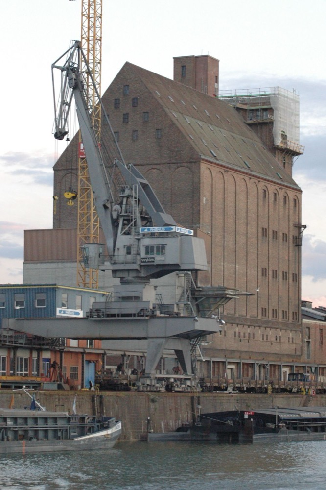
上位の船社の多くは、創業家または国が支配しています。創業家の企業は、短期の利益よりも船隊の拡大を優先する判断を取りやすい構造です。一方で、非上場の企業は財務情報の開示が限られます。
| 企業 | 支配する株主 | 上場 |
|---|---|---|
| MSC | アポンテ家。創業者のジャンルイジ・アポンテが会長で、子のディエゴ・アポンテとアレクサ・アポンテ・ヴァゴが経営を引き継いでいます | 非上場 |
| CMA CGM | サーデ家。2017年からロドルフ・サーデがCEOです | 非上場 |
| マースク | A.P.モラー・ホールディング（モラー家の財団が保有）。2025年9月時点で資本の43.71%・議決権の52.01% | 上場（コペンハーゲン） |
| COSCO | 中国政府（国有企業） | 上場（上海・香港） |
| ハパックロイド | CSAV（チリ、ルクシッチ家）・クラウス・ミヒャエル・キューネ・ハンブルク市・カタール・サウジアラビアの公共投資基金 | 上場（フランクフルト） |
| ONE | 日本郵船・商船三井・川崎汽船（3社とも上場） | 非上場 |
ハパックロイドの株主はUASCとの合併時点の構成を含みます。最新の持株比率は同社の開示で確認してください。
IMO（国際海事機関）は2023年7月、国際海運の温室効果ガスの排出を2050年頃までに実質ゼロにする目標を採択しました。中間の目安は、2008年比で2030年に20%以上、2040年に70%以上の削減です。実現の手段として、燃料の温室効果ガスの強度に応じて課金する「ネットゼロ・フレームワーク」が2025年4月に承認されました。しかし2025年10月の臨時会合では、米国とサウジアラビアなどの反対で採択が1年延期されました。
燃料は、LNG・メタノール・アンモニア・水素が並行して開発されています。素材のメモでは「LNG→メタノール→アンモニア→水素の順に進化」と記載していましたが、実際には船社ごとに選ぶ燃料が異なり、順番に移行しているわけではありません。マースクはメタノール、MSCとCMA CGMはLNGを燃料とする大型船を多く発注しています。日本の3社はLNG燃料船とアンモニア燃料船の実証に取り組んでいます。
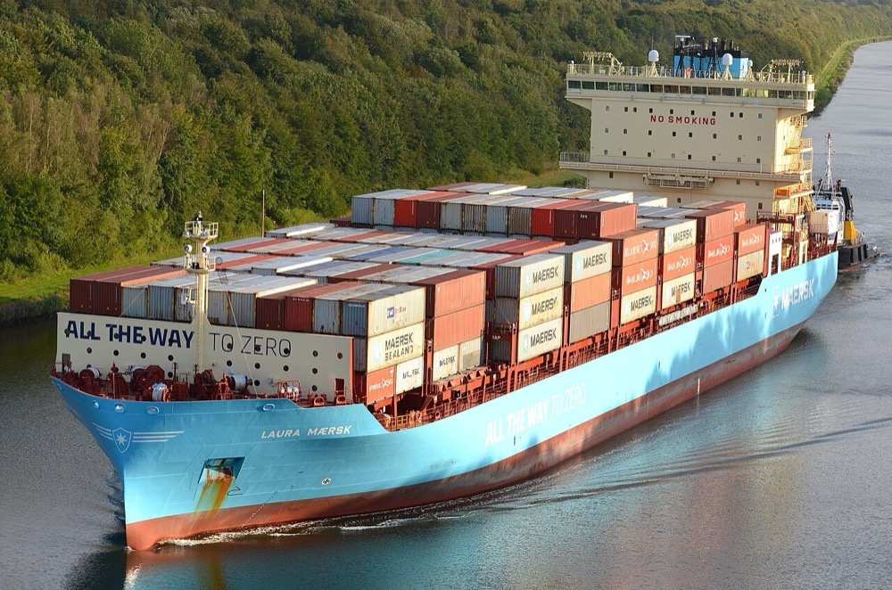
船社と国家は、港湾の運営権も取得しています。港の運営権を持つと、自社の船を優先して着岸させ、荷役の費用を自社で管理できます。中国の企業は2010年代から一帯一路の沿線で港湾の運営権を取得し、欧州と豪州では安全保障の観点から外国企業の出資を制限する動きが出ています。
| 港 | 内容 | 2026年時点の状況 |
|---|---|---|
| ピレウス（ギリシャ） | COSCOが2016年にピレウス港湾公社の株式51%を約2.8億ユーロで取得し、2021年10月に67%に引き上げました。 | COSCOが過半数を保有しています。 |
| グワダル（パキスタン） | 中国海外港口控股が2013年から運営し、2015年に約2,000エーカーの用地について40年間のリースを結びました。 | 運営を継続しています。 |
| ハンバントタ（スリランカ） | 2017年7月、招商局港口控股（China Merchants Port Holdings）が運営会社の株式70%を11.2億ドルで取得し、99年間のリースを結びました。代金はスリランカ政府の対中債務の返済に充てられました。 | 運営を継続しています。 |
| ダーウィン（豪州） | 2015年10月、嵐橋集団（Landbridge Group）が5.06億豪ドルで99年間のリースを取得しました。素材のメモの「2019年」は誤りです。 | 豪州政府は2025年4月から国内企業への売却を求めていますが、嵐橋集団は売却を拒否し、投資紛争解決国際センター（ICSID）に申し立てました。2026年5月時点で売却は実現していません。 |
| ハンブルク（ドイツ） | COSCOは2023年6月、HHLAのトレロルト・ターミナルの株式24.99%を取得しました。当初は35%を求めていましたが、ドイツ政府の審査で25%未満に制限されました。素材のメモの「ハンブルク港の25%」は、港全体ではなく1つのターミナルの比率です。 | MSCが2024年にHHLAの株式49.9%を取得し、ハンブルク市が50.1%を保有しています。 |
| ジブチ | 中国は2017年にジブチに初の海外軍事拠点を開設しました。 | 運用を継続しています。 |
| パナマ運河の両端の港 | CKハチソンは2025年3月、パナマの2港を含む港湾事業の大半をブラックロックとMSCの港湾部門（TiL）の連合に228億ドルで売却することで合意しました。 | パナマの最高裁判所が2026年1月にCKハチソンの運営権を違憲と判断し、パナマ政府が港の管理を引き継ぎました。中国当局の審査もあり、2026年春時点で売却は完了していません。 |
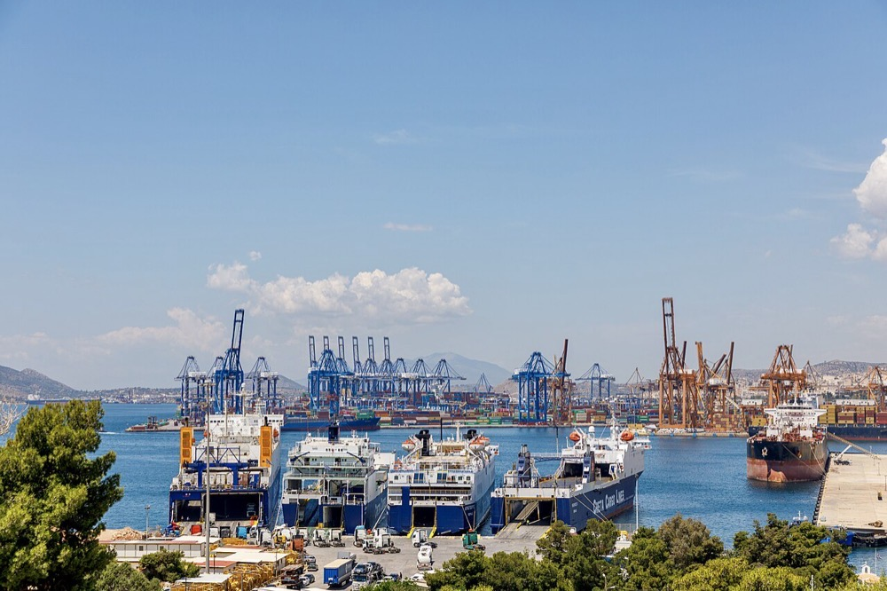
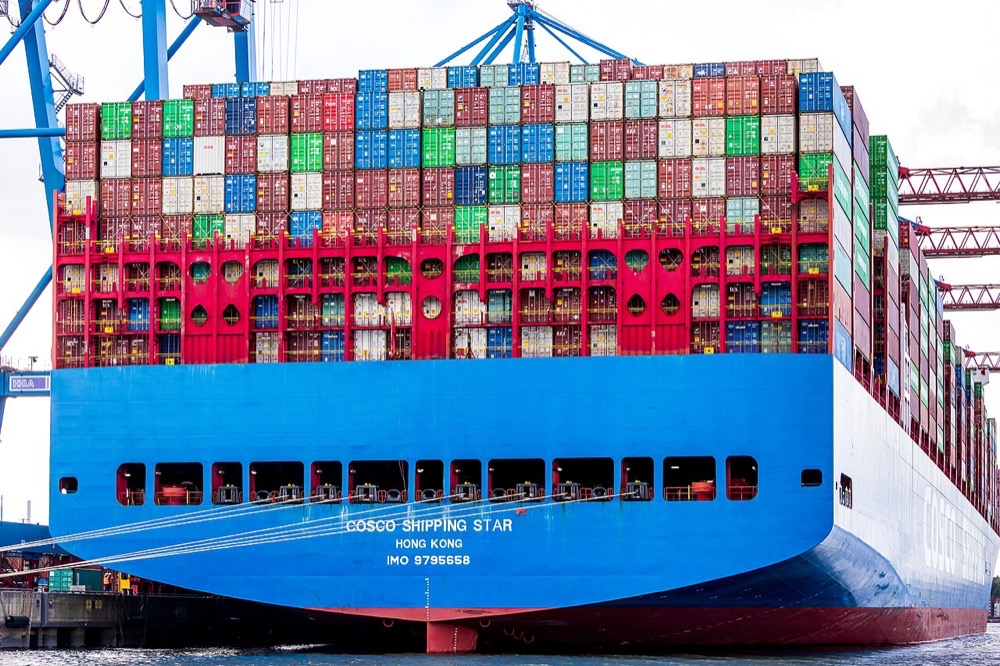
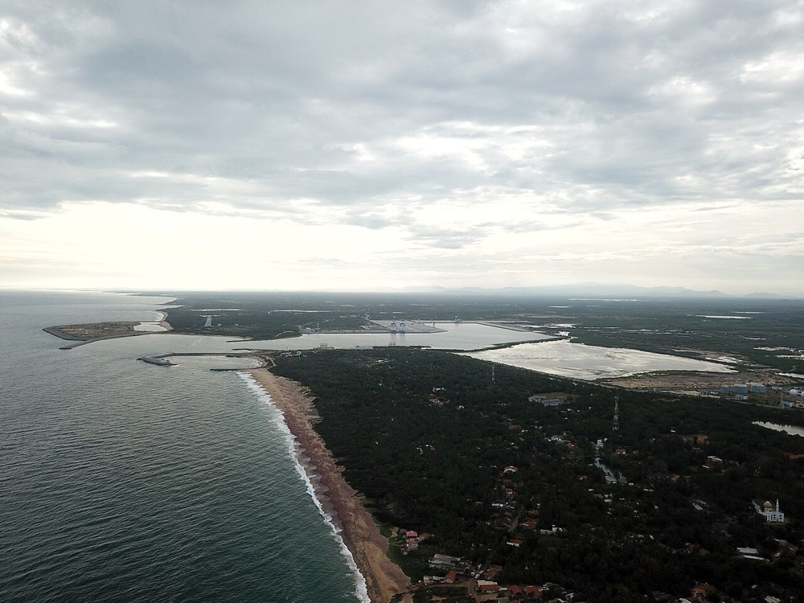
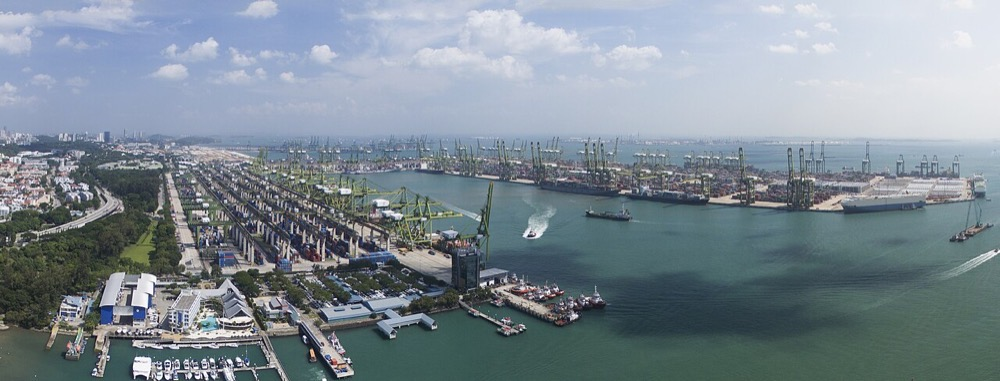
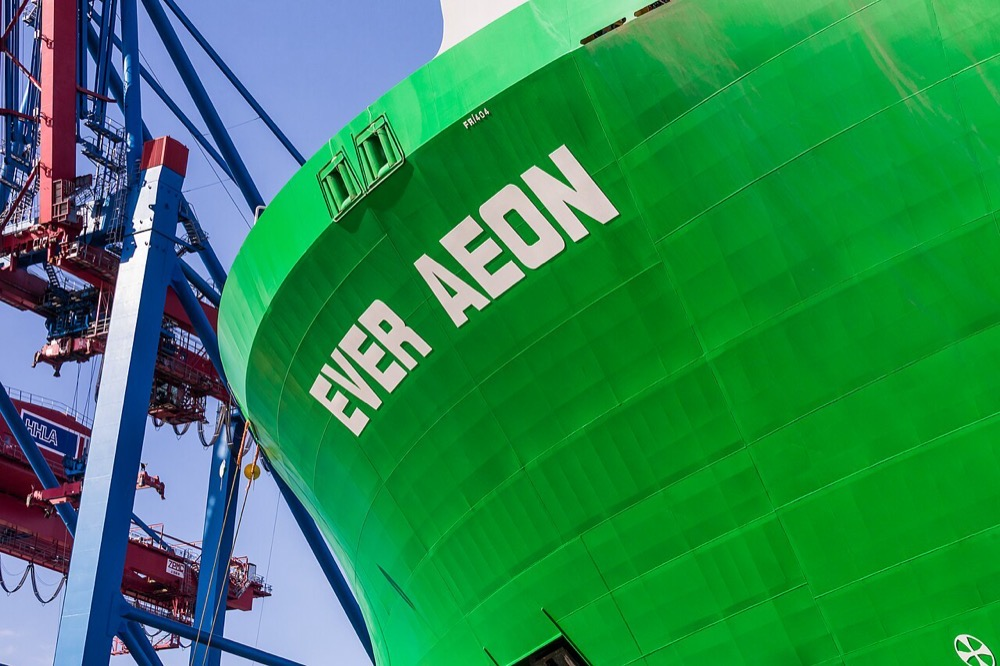
船が必ず通る狭い海峡と運河は、海上交通の要衝です。スエズ運河・マラッカ海峡・ホルムズ海峡・パナマ運河で通航が止まると、迂回の日数がそのまま運賃と保険料に反映されます。2021年3月23日には、エバーグリーンが運航する2万TEU級のエバーギブン号がスエズ運河で座礁しました。29日に離礁するまでの約6日間、運河は通航できませんでした。3月28日には369隻以上が通航を待っていたと推計されています。
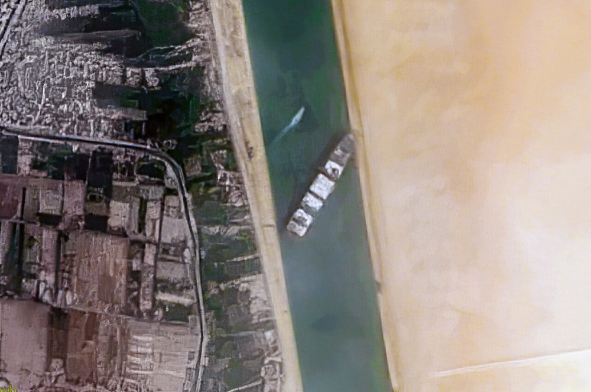
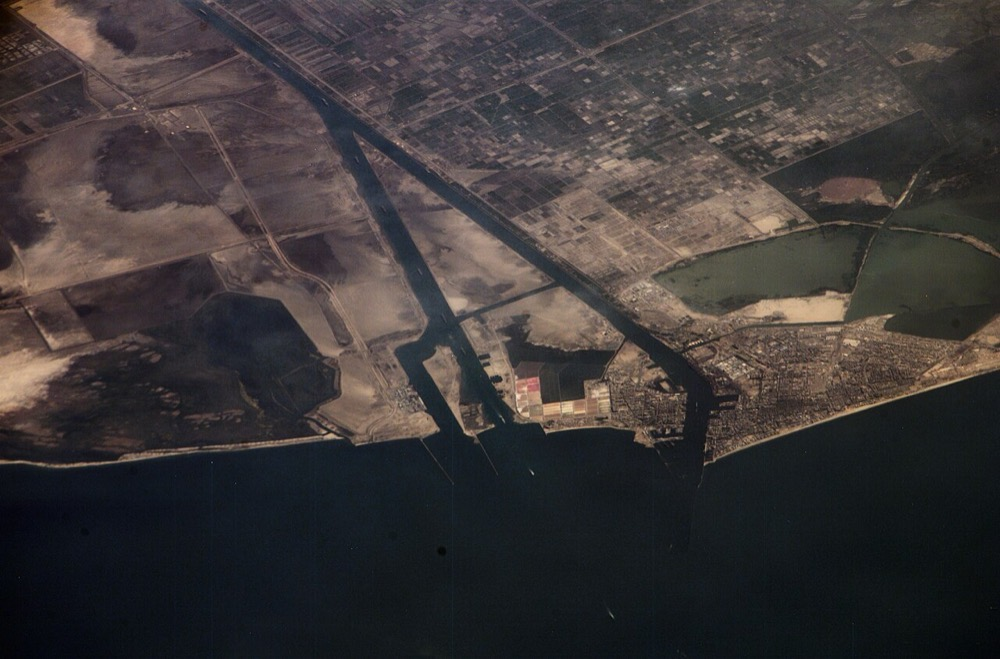
船の運航データの収集と燃費の最適化、予約と書類の電子化が進んでいます。マースクとIBMは2018年に、ブロックチェーンで貿易書類を共有する基盤「TradeLens」を開始し、150社以上が参加しました。ただし業界全体の参加が得られず採算が合わないとして、2022年11月に終了を発表し、2023年3月末までに停止しました。船社間でデータを共有する仕組みは、船社同士の競争と利害の対立から、1社の主導では普及しませんでした。
EUの排出量取引制度（EU-ETS）は2024年から海運を対象に加え、2026年からは排出量の全量が対象です。各社は船ごとの排出量を計測して報告しており、排出量のデータの管理は規制への対応に必須の業務です。
運賃は、荷動き（需要）と船腹量（供給）の差で決まります。船の建造には2〜3年かかるため、運賃が高い時期に発注した船が、需要が減った時期に引き渡される周期が繰り返されます。
| 時期 | 需給の動き |
|---|---|
| 2008年 | ばら積み船の運賃指数BDIは、5月20日に過去最高の11,793を記録した後、リーマン・ショックを経て12月5日に663まで約94%下落しました。素材のメモにあった「日本郵船の株価が4,000円から500円に下落」は、株式併合の前後で株価の水準が異なるため確認できず、記載していません。 |
| 2016年 | BDIが2月に過去最低の290を記録しました。8月に韓進海運が経営破綻しました。 |
| 2020〜2022年 | 新型コロナの流行で物の需要が増え、港の混雑で船が滞留しました。コンテナ運賃は過去最高になり、マースクの2022年の営業利益は309億ドルでした。 |
| 2023〜2024年 | 2023年11月から紅海でフーシ派による船舶への攻撃が始まり、多くの船が喜望峰を回る航路に変更しました。パナマ運河は干ばつで1日の通航隻数を一時24隻程度まで減らしました。 |
| 2026年 | イランをめぐる衝突とホルムズ海峡の閉鎖で運賃が上がる一方、発注残は船隊の38.3%に達しています（2026年5月の報道）。Drewryは2026年2月の報告で、供給過剰で運賃がさらに下がると予測していました。 |
素材のメモでは、需給の論点として「中国一極型からASEAN・インドへの多極化」も挙げていました。生産拠点の分散が航路別の荷動きをどの程度変えたかは、本ページでは数値を確認していません。
2026年4月時点のAlphalinerの集計では、上位10社が世界のコンテナ船腹の約85%を占めます。MSCの比率21.6%は、2018年にマースクが記録した19%台を上回る、1社としての過去最高です。
出所：Alphaliner「PublicTop100」（2026年4月時点、Wikipediaの一覧表で参照）。アライアンスの合計は各社の船隊全体の比率を足したもので、アライアンスの航路に投入している船腹の比率ではありません。ZIMは2026年にハパックロイドによる買収で合意したと報じられています。
| 時期 | 出来事 |
|---|---|
| 2026年1月 | パナマの最高裁判所がCKハチソンのパナマの港の運営権を違憲と判断しました。 |
| 2026年2月 | ジェミニが紅海経由の航路を一部再開しましたが、2月27日にマースクは一部の便を喜望峰回りに戻しました。 |
| 2026年2月末〜3月 | 米国とイスラエルがイランを攻撃し、ホルムズ海峡の通航が止まりました。マースクとハパックロイドはホルムズ海峡の通航を停止し、CMA CGMはスエズ運河の通航を停止しました。MSCは中東向けの予約の受付を停止しました。 |
| 2026年4月 | 米国とイランが4月7日に停戦で合意し、イランは4月17日に停戦期間中のホルムズ海峡の通航を認めると発表しました。 |
| 2026年6月 | ホルムズ海峡が部分的に再開した後、大手のコンテナ船社は湾岸地域からほとんどの船を引き揚げました。サウジアラビアは紅海側の港を経由する航路を増やしました。 |
| 2026年7〜10月 | ジェミニは7月にAE15、9月にさらに4つの航路をスエズ運河経由に戻しました。マースクは2027年3月までに全航路をスエズ運河経由に戻すことを目標にしています。ただし、業界全体でスエズ経由に戻った比率は3〜4割程度との推計があります。 |
| 2026年10月 | IMOのネットゼロ・フレームワークの採択が改めて審議される予定でした。審議の結果を報じる資料は、本ページの作成時点で確認できませんでした。 |
2026年の海運には、運賃を上げる要因と下げる要因が同時にあります。紛争で航路が長くなると、同じ荷物を運ぶのに多くの船が必要になり、運賃が上がります。一方で、2021〜2022年の高運賃の時期に発注した船の引き渡しが続いており、航路がスエズ経由に戻れば船が余ります。Drewryは、紅海の航路が正常に戻った場合、運賃と利益が大きく下がると予測しています。
| 素材の記述 | 修正後 |
|---|---|
| 1453年、関税でジェノヴァ・ローマ・ヴェネツィアが衰退 | ローマは交易国家ではないため除外。衰退は複数の要因によるとした |
| 1833年、東インド会社の独占権撤廃とアダム・スミス | インド貿易の独占廃止は1813年、中国貿易と茶は1833年。『国富論』は1776年 |
| 1837年、Lloyd's Register再編 | 1834年（1760年設立） |
| 1840年、P&O設立 | 1837年設立、1840年に勅許を得てP&Oに改称 |
| 1875年、イギリスがスエズ運河を買収 | エジプト総督が保有するスエズ運河会社の株式（半分弱）を買い取った |
| 1884年、P&Oとパシフィック・メールが日本から撤退 | 1875〜1876年に三菱との競争で上海航路から撤退 |
| パナマ運河で航路が約40%短縮 | 約1万3,000海里から約5,200海里へ、約6割短縮 |
| 1956年、シーランド社が世界初のコンテナ船を運航 | 運航はパン・アトランティック汽船。シーランドへの改称は1960年 |
| 1970年、MSCがイタリアからスイスに本社を移転 | 設立地はブリュッセルとナポリの2説。1978年にジュネーブに本社 |
| 1973年、石炭から石油に移行しタンカー需要増、日本郵船の株価が5倍 | 石油への転換は1960年代。株価5倍は確認できず削除 |
| CGMは1973年に設立 | 統合の時期は1973年と1974〜1977年の資料がある |
| 1978年、アメリカのPMが貨物部門を閉鎖 | 該当する企業と事実を確認できず削除 |
| 1996年、CMA CGMが世界3位 | 1996年の順位は確認できず削除 |
| グランド・アライアンス（1995年、NOL（APL）を含み2008年にAPL脱退） | NOLは1997年のAPL買収後にニュー・ワールド・アライアンスへ移った。1998年からOOCL・MISCを加えた体制 |
| CKY（1996年、韓進海運を含む） | 韓進海運の加入は2001年頃。1996年の開始は確認できず |
| 1998年、大阪商船・三井船舶・ナビックスラインが商船三井に | 大阪商船と三井船舶の合併は1964年。ナビックスラインとの合併は1999年 |
| 1999年、マースクがシーランド買収で世界最大に | マースクは買収前から首位で、買収で首位を固めた |
| 2008年、日本郵船の株価4,000円から500円 | 確認できず削除。BDIの下落で代替 |
| 2016年、ハパックロイドがUASCを50億ドルで買収 | 2017年5月、株式交換による合併 |
| 2017年、ONE発足 | 2017年7月設立、2018年4月営業開始 |
| 2021年、商船三井がダイビルを1,210億円で買収 | TOBは2021年11月発表・2022年1月成立、約1,213億円 |
| 2022年、日本郵船がENEOSのLNG事業を約760億円で買収 | 2025年4月、ENEOSオーシャンのLPG船・ケミカルタンカーなどの事業を承継した新会社の80%を取得。金額は確認できず |
| 2023年、ハパックロイドがドイツの航空会社を買収 | 確認できず削除 |
| 2025年、川崎汽船・商船三井がLNG・メタノール船に1,000億円投資 | 確認できず削除 |
| 2019年、ダーウィン港を99年リース | 2015年10月 |
| 2022年、ハンブルク港の25%を中国企業が取得 | 2023年6月、トレロルト・ターミナルの24.99% |
| プレミア・アライアンスにMSCが参加 | 構成はONE・HMM・陽明海運。MSCはスペースの交換で協力 |
| MSCの船隊846隻・約602万TEU | 2026年4月時点で約1,000隻・約732万TEU |
| ライン川水系がハンブルクを結ぶ | ハンブルクはエルベ川の港 |
| マースクが世界初のメタノール燃料船を導入 | コンテナ船として初。メタノール燃料の船自体は以前から存在 |
| 用語 | 正式名称 | 意味 |
|---|---|---|
| TEU | Twenty-foot Equivalent Unit | 20フィートのコンテナ1個を1とする単位。船と企業の規模を表す |
| 定期船 | Liner | 決まった航路を時刻表どおりに運航する船。コンテナ船が該当する |
| 不定期船 | Tramp | 荷主との契約ごとに航路を決める船。タンカーとばら積み船が該当する |
| アライアンス | Alliance | 複数の船社が船のスペースを交換し、航路を共同で運航する協定 |
| スロット交換 | Slot exchange | 相手の船に自社のコンテナを積む枠を互いに提供する取引 |
| ハブ・アンド・スポーク | Hub and spoke | 大型船は主要港だけに寄港し、周辺の港とは小型船で結ぶ運航方式 |
| パナマックス・ネオパナマックス | Panamax / Neopanamax | パナマ運河の旧閘門・新閘門を通航できる最大の船の寸法 |
| BDI | Baltic Dry Index | ばら積み船の運賃の指数。バルチック海運取引所が算出する |
| SCFI | Shanghai Containerized Freight Index | 上海発のコンテナ運賃の指数 |
| WCI | World Container Index | Drewryが算出する主要8航路のコンテナ運賃の指数 |
| 発注残 | Orderbook | 発注済みで未引き渡しの船の量。現有船隊に対する比率で示す |
| LNG | Liquefied Natural Gas | 液化天然ガス。燃料としても使う |
| IMO | International Maritime Organization | 国際海事機関。国連の専門機関で、船の安全と環境の規則を定める |
| EU-ETS | EU Emissions Trading System | EUの排出量取引制度。2024年から海運が対象に加わった |
| EBIT | Earnings Before Interest and Taxes | 利払い前・税引き前の利益。営業利益に近い指標 |
| TOB | Take-Over Bid | 株式公開買付け |
| 黄金株 | Golden share | 重要な決議に拒否権を持つ株式。ZIMではイスラエル政府が保有する |
| APL・NOL | American President Lines・Neptune Orient Lines | 米国とシンガポールの船社。現在はCMA CGMの傘下 |
| HMM | HMM Co., Ltd.（旧 現代商船） | 韓国の船社 |
| OOCL | Orient Overseas Container Line | 香港の船社。2018年からCOSCOの傘下 |
| UASC | United Arab Shipping Company | 湾岸6か国が出資した船社。2017年にハパックロイドと合併 |
| HHLA | Hamburger Hafen und Logistik AG | ハンブルク港の港湾運営会社 |
| TiL | Terminal Investment Limited | MSCの港湾運営部門 |

_01.jpg){kind=link}
.JPG){kind=link}

.jpg){kind=link}


.jpg){kind=link}